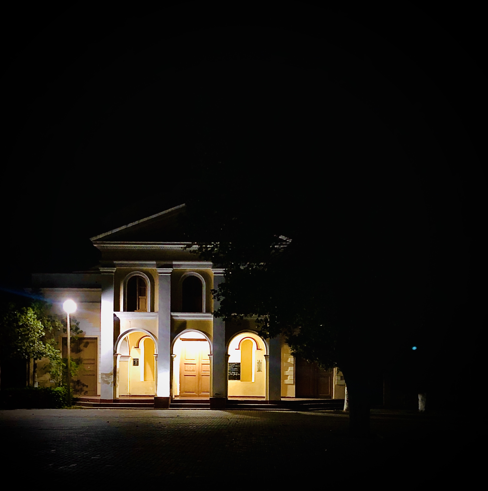

"ESPACIO DIOCLESIANO" .-
- MUSEO DE ARTE RELIGIOSO -
"El Arte es la Simbiosis entre Dios y el Hombre".- (Andres Gidé)
INICIO.-
HISTORIA.-
GALERIA.-
INSTITUCIONAL.-
CONTACTO.-
CONTACTO.-
NOMBRE:
MAIL:
MENSAJE:
